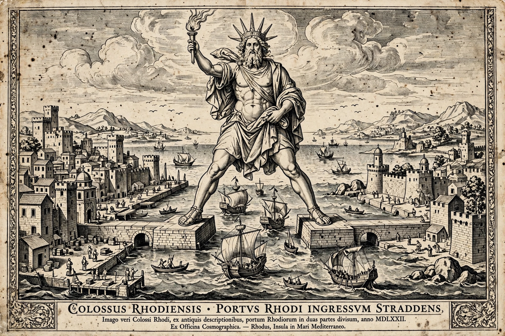

Colossus of Rhodes
From Wikipedia, the free encyclopedia

The Colossus of Rhodes was a giant statue of the sun god Helios erected in the city of Rhodes in 280 BC. Built by Chares of Lindos from bronze seized in a siege, it stood about 33 metres (108 ft) high — as tall as the Statue of Liberty from feet to crown — and was one of the Seven Wonders of the Ancient World. It stood for only 56 years before an earthquake snapped it at the knees; its ruins lay admired for another eight centuries.
Construction
Rhodes, having withstood Demetrius I of Macedon's siege in 305–304 BC, sold his abandoned siege equipment and used the proceeds for the statue, thanking Helios for deliverance. Chares, a pupil of Lysippos, built it over twelve years: an iron and stone framework clad in bronze plates, progressively banked with earth ramps. Popular prints show it straddling the harbour entrance, but that pose is a medieval fantasy — the statue almost certainly stood on a single pedestal beside the harbour.
Destruction and remains
The earthquake of 226 BC toppled it; an oracle forbade rebuilding, and the fallen giant became a tourist attraction in its own right — Pliny marveled that few hands could encircle its thumb. The remains were reportedly sold for scrap after the Arab conquest of Rhodes in the seventh century AD, carted off, chroniclers claimed, on 900 camels — a figure treated with scepticism.
Legacy
The Colossus fixed the type of the monumental harbour statue — echoed in the Statue of Liberty (whose sonnet 'The New Colossus' takes the comparison as its theme) — and proposals to rebuild it, most recently in 2015, have periodically surfaced and stalled.